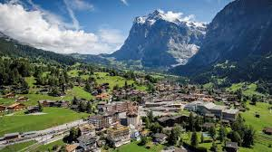

Wilkommen!
Picture a dream mountain resort and it would look a lot like Grindelwald in the Bernese Alps. This village is under the infamous North Face of Eiger, a monumental wall of rock that inspires and intimidates in equal measure. The North Face was first conquered in 1938 and attracts hundreds of climbers every year, which look like tiny flecks as they battle up the rock.

Seasoned hikers and climbers may already know about the Eiger trail, a six kilometre route that brings you right to the foot of the Eiger’s north face.
The route been used by climbers since the 1930s to embark on gruelling ascents of that concave slab of rock 1,600 metres high.
The journey to Jungfraujoch is the kind of once-in-a-lifetime experience you’ll only encounter in the Alps.
From Grindelwald Grund you can catch the train from Kleine Scheidegg and change there for the highest railway in the world.
One of the inspiring in walking distance from the gondola stop at First is a stunning Alpine lake, about an hour away.
Bachalpsee is at an altitude of 2,265 metres, and its reflective waters, grassy banks and mountain backdrop make up a quintessentially Alpine scene.